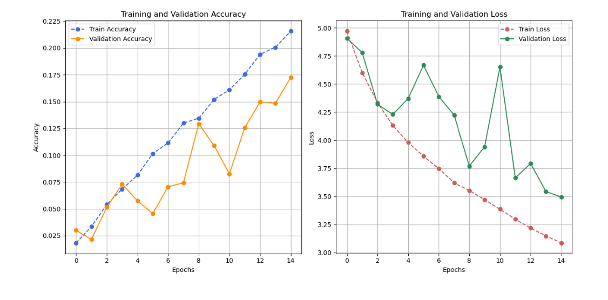
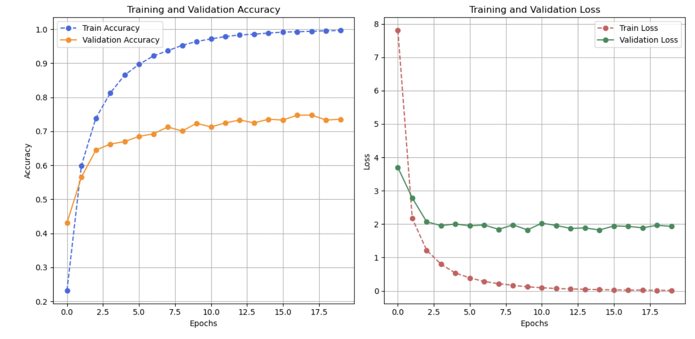

The Dog Identification App uses two main datasets:
Below are some examples of predictions made by the Dog Identification App:
The Dog Identification App uses a convolutional neural network (CNN) with pre-trained VGG16 layers for feature extraction. The extracted features are then passed to a custom classifier that predicts the breed of the dog. Below is a summary of the model:
The Dog Identification App was trained using two different neural network architectures: a custom CNN and a pretrained VGG16 model. Below is a comparison of their performance:
The custom CNN model was built from scratch and achieved the following performance:
Though the custom CNN model improved during training, the validation performance showed significant fluctuations, suggesting generalization challenges.
The VGG16 model, pre-trained on ImageNet, was fine-tuned for the dog breed classification task. It achieved better performance and more stable validation results:
The VGG16 model outperformed the custom CNN due to its powerful feature extraction capabilities from the pretrained convolutional layers.